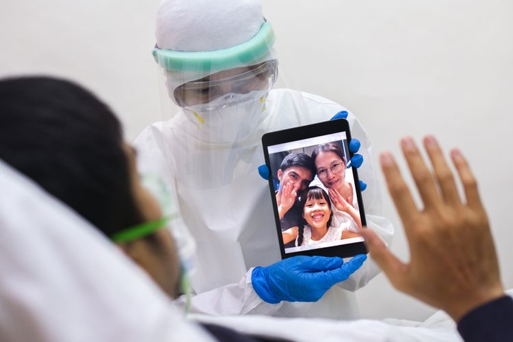

KOMPAS.com - Hai, apa kabarmu sepekan lalu? semoga kabar baik dan dalam rupa sehat
pikiran, jiwam dan raga selalu menyertaimu.
Dalam situasi penyebaran Covid-19 makin meluas yang tercemin dari terus meningkatnya
jumlah kasus positif, mendapati kesehatan kita terawat adalah kondisi yang patut kita
syukuri.
Untuk banyak orang, mungkin juga kamu, ini adalah jawaban atas doa-doa. Doa dipanjatkan
karena kita sadar, banyak hal terjadi diluar kendali kita, diluar upaya kita semata-mata.
Tentu, kita juga berdoa untuk saudara-saudara kita yang saat ini tengah dalam perawatan
untuk sembuh dari virus ini. Lingkaran yang terkonfirmasi positif Covid-19 makin dekat.
Ada pejabat publik yang populer karena tampil dimedia, ada teman kantor yang biasa bekerja
sama kita, ada tetangga, atau bahkan keluarga dekat kita sendiri
Jumlah pasien aktif, atau mereka yang terkonfirmasi positif Covid-19 dan masih dirawat
karena belum sembuh per 20 September 2020 adalah 57.796 pasien.
Jumlah akumulasi kasus Covid-19 di Indonesia sendiri sejak kasus pertama diumumkan oleh
Presiden Joko Widodo pada 21 Maret 2020 hingga Kamis ini, yakti berjumlah 244.676.
Angka itu tercatat setelah ada penambahan kasus positif sebanyak 3.989 dalam 24 jam
terakhir pada 20 September 2020.
Kita doakan juga semua tenaga kesehatan sebagai benteng berakhir pertahanan kita
melawan Covid-19.
Selain berdoa, kita bisa berkontribusi dengan memperkuat benteng terdepan pertahanan
kita dari virus ini dengan disiplin menerapkan protokol kesehatan. Memakai masker,
menjaga jarak, dan mencuci tangan dengan sabun dan air mengalir terlihat sepele,
tetapi ini pertahanan paling kuat agar tidak terpapar virus ini.
Kontribusi kita akan membantu para tenaga kesehatan dibenteng terakhir pertahahan
kita melawan Covid-19
Untuk tenaga kesehatan yang telah berguguran karena berjuang dibenteng terakhir ini,
mantan Ketua PP Muhammadiyah Ahamad Syafii Maarif mengirim pesan khusus kepada
Presiden Joko Widodo.
Dalam pesan tersebut, Syafii mengaku menjerit dan terguncang batinnta mendapati berita
kematian para dokter.
Saat pesan Syafii dikirim ke Presiden, Minggu 13 September 2020, 115 dokter gugur. Catatan
kematian tertinggi di Asia. Di Indonesia, rasio dokter dengan warga adalah yang terendah
di Asia Tenggara. Dari 10.000 warga, rata-rata hanya dilayani empat dokter.
Jeritan Syafii tentu saja meawakili jeritan keluarga dokter, tenaga kesehatan, pasien dan
warga kebanyakan yang kehilangan potensi ditolong tenaga kesehatan saat ancaman penyebaran
Covid-19 terus meluas.
Syafii tidak melihat upaya maksimal Kementrian Kesehatan untuk menolong nyawa para dokter
secara maksimal.
Kepada Presiden, Syafii meinta agar Presiden memerintahkan Menteri Kesehatan dan jajarannya
bekerja maksimal. Tanpa langkah ini, bangsa bisa oleng karena dokter mati setiap hari saat
melakukan tugas kemanusiaan.
Atasa jeritan yang disuarakan Syafii ini, Presiden Jokowi merespons. Orang kepercayaan dan
andalan Presiden Jokowi di segala sutuasi selama ini lantas diberi perintah.
Namanya Luhut Binsar Panjaitan. Perannya di Pemerintahan Jokowi dua periode ini tak terkira
luasnya meskipun jabatan resminya Menteri Koordinator Bidang Kemaritiman dan Invesrasi.
waktu Luhut untuk melaksanakan kepercayaan dan perintah ini dua pekan terhitung 15 September
2020. dalam waktu dua pekan, kepercayaan itu akan diuji pada 30 September 2020.
Karena tugas0tugas luar biasa yang dipercayakan ini, jangan heran kalau Luhut akan makin
sering kamu jumpai atau dengar beritanya terkait penanganan Covid-19.
Luhut memang tidak sendiri. Luhut ditunjuk bersama Ketua Satgas Penanganan Covid-19 Doni
Monardo, juniornya jauh di Komando Pasukan Khusus (Kopassus)
Presiden minta dua jenderal ini bekerja sama dengan Kementrian Kesehatan yang dijabat
Letnan Jenderal Terawan Agus Putranto untuk penanganan kasus Covid-19 di sembilan
provinsi.
Sembilan provensi yang dimaksud adalah DKI Jakarta, Jawab Barat, Jawa Tengah, Jawa Timur,
Sematera Utara, Kalimantan Selatan, Sulawesi Selatan, Papua dan Bali.
Sembilan provinsi tersebut menjadi sorotan Presiden Jokowi karena menyumbang 75 persen
dari kasus Covid-19 di tanah air.
Apa yang akan dilakukan Luhut sebagai orang kepercayaan Presiden Jokowi? Luhut menyebut,
tidak ada hal istimewa yang akan dilakukan. Luhut juga menerima kritik bahwa dia bukan
epidemiolog.
Tetapi, Luhut mengemukakan, untuk tugas yang dipercayakan kepadanya ini, ia dibantu
banyak orang pintar, diantaranya adalah epidemiolog muda.
Peran yang diambil untuk menjalankan perintah yang dipercayakan Presiden Jokowi selama
dua pekan untuk menghadapi masa kritis tuga bulan kedepan adalah menjadi manajer.
Luhut mengklaim, dirinta adalah manajer yang baik.
Menurut Luhut yang bisa tanpa beban menerobos semua batasan, lima target dua pekan
ke depan di sembilan provinsi sudah dirumuskan.
Pertama, percepatan perubahan perilaku terkait pelaksanaan protokol kesehatan.
Kedua,penurunan penambahan kasus harian
Ketiga, peningkatan tingkat kesembuhan atau recovery rate.
Keempat, penurunan tingkat kematian atau mortality rate.
Kelima,penurunan angka kematian atau mortality cases
Target yang tidak mudah. Kurang dari sepekan berjalan, penambahan kasus harian terus
terjadi dengan tercatatnya rekor-rekor baru. Epidemiolog juga menyebut, meskipun rekor-
rekor baru tercatat, Indonesia belum masuk fase puncak.
Kalau kamu terlewat mengikuti berita, 19 September 2020 pekan lalu, penambahan pasien
positif Covid-19 menembus rekor baru yaitu sebanyak 4.168 orang dalam 24 jam terakhir.
rekor penambahan pasien harian tertinggi sebelumnya sejak 2 Maret 2020 terjadi pada 16
September 2020 taitu sebanyak .963 orang dalam 24 jam terakhir.
Mengantisipasi masa krisis hingga Desember 2020, Luhut dan tim Satuan Petugas (Satgas)
Penanganan Covid-19 akan berupaya menjaga angka kasusu Covid-19 tidak melonjak
signifikan selama tiga bulan kedepan.
Upaya bersama menjaga angka itu kata Luhut akan berbarengan dengan ketersediaan vaksin
pada Desember 2020 atau Januari 2021.
Meskipun semua seperti terencana, apa yang dikatakan Luhut perlu kita pahami sebagai
harapan bukan semata-mata keyakinan akan terlaksananya rencana. Karena itu, bersiap
untuk yang terburuk perlu dilakukan sambil terus berharao yang terbaik didepan
Tiga bulan kedepan atau sampai vaksin ditemukan dan dipastikan ketersediaannya, kita
akan ada dalam masa yang kritis.
Apakah kita akan sanggup melewatinya?
Pengalaman kita enam bulan dalam situasi penuh ketidakpastian ini setidaknya bisa menjadi
bekal kepercayaan diri meskipun bukan jaminan sepenuhnya.
Dibandingkan awal-awal pandemi, pemerintah saat itu jauh lebih paham bagaimana mengatasi
situasi. Panik seperti awal-awal pandemi tidak terlihat meskipun jumlah pasien terus
bertambah.
Luhut menyatakan, tigas stategi menekan penyebaran Covid-19 dilakukan. Pertama operasi
penegakan disiplin protokol kesehatan.
Kedua, peningkatan manajemen perawatan pasien Covid-19 untuk menurunkan mortality rate
dan meningkatkan recovery rate.
Ketiga, penanganan sevara spesifik klaster-klaster Covid-19 disetiap provinsi.
Pekan depan, hasil kerja-kerja orang kepercayaan dan andalan Presiden Jokowi di segala situasi
ini akan dipetakan. Tangglan 30 September 2020 akan tetat dua pekan kepercayaan dan operasi
dijalankan.
Apa kontribusi minimal yang bisa kamu lakukan?
Tidak banyak, tetapi efektif dibenteng paling depan perlindungan dari Covid-19 yaitu patuh
dan disiplin pada protokol kesehatan.
Disiplin kita mementukan.
Salam disiplin.
Wisnu Nugroho